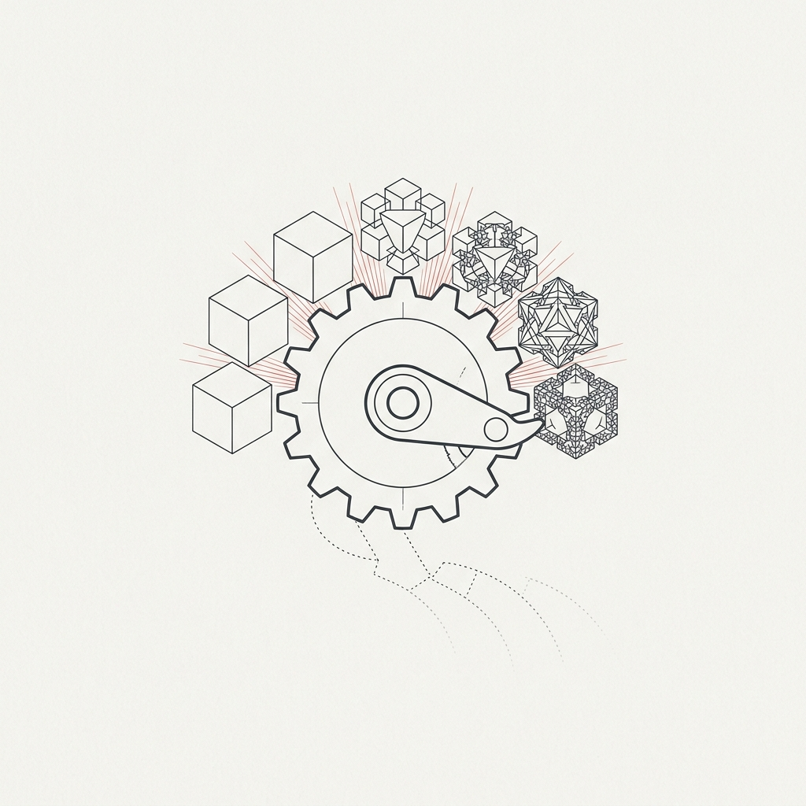

There’s a pattern hiding in plain sight across dozens of industries, and almost nobody is talking about it.
Products are getting more complex. Services are getting more specialized. The knowledge required to evaluate, specify, and negotiate a purchase is growing in sector after sector. And that complexity is quietly turning thick, liquid markets into thin, fragile ones — markets where buyers and sellers struggle to find each other, struggle to understand what they’re even trading, and struggle to close deals that should be straightforward.
This isn’t a complaint about technology. Technology is causing it — but not uniformly, and not as a simple side effect. The story is more interesting than that.
The Two-Speed Economy
If you look at consumer markets, the opposite claim seems true. Technology has made buying easier. You can order groceries from your phone, subscribe to software with a click, compare insurance quotes in seconds, and have a tailored outfit delivered to your door by an algorithm that knows your measurements. One-click purchasing, real-time price comparison, instant delivery — the consumer transaction has been engineered into near-frictionlessness.
This is real progress, and it’s worth acknowledging. In the B2C space, technology has dramatically reduced the distance between wanting something and having it. Entire categories of consumer friction — finding a store, comparing brands, waiting for delivery — have been compressed to near zero. The platforms that accomplished this are genuine marvels of market engineering.
But something very different is happening in the business-to-business world.
In B2B, expectations are more specific. Mission goals are more ambitious. The products themselves carry layers of technical, regulatory, and integration requirements that consumer goods simply don’t. And with every generation of technological advancement, those layers thicken — not because anyone set out to make transactions harder, but because the products are genuinely becoming more capable, more specialized, and more entangled with the systems they serve.
The consumer economy is getting simpler to navigate. The industrial and professional economy is getting dramatically harder. And it’s the second trend — the one nobody tracks — that has the larger structural consequences.
The Complexity Ratchet
Consider a simple thought experiment. In 1990, if you needed a new pump for an industrial water system, you called a distributor, described the flow rate and pipe diameter, and they shipped one. The transaction required maybe ten minutes of shared technical knowledge.
In 2026, that same pump might be a variable-frequency-drive unit with IoT monitoring, predictive maintenance firmware, specific cybersecurity compliance requirements, integration APIs for your building management system, energy efficiency certifications that vary by jurisdiction, and a service contract that includes remote diagnostics. The physical object is better in every measurable way. But the transaction — the act of finding, evaluating, specifying, and purchasing it — requires vastly more shared context between buyer and seller.
This is what I’d call the complexity ratchet: technology improves the product but simultaneously raises the knowledge barrier to trading it. In market engineering terms, this is the escalation of what practitioners call offering complexity — the number of distinct details that matter for each transaction. And offering complexity almost never ratchets backward. Once a product category absorbs a layer — software integration, regulatory compliance, environmental certification, cybersecurity requirements — that layer becomes permanent. The next generation of products doesn’t simplify; it adds another layer on top.
The ratchet operates across the B2B landscape:
- Building materials now carry embodied carbon scores, fire performance ratings, acoustic certifications, and supply chain provenance documentation that didn’t exist a decade ago. A contractor can’t just order insulation — they need insulation that meets a specific thermal bridging threshold, complies with a particular green building standard, and comes with a verified EPD that the project’s sustainability consultant will audit.
- Agricultural inputs — seeds, fertilizers, biologicals — now come with trait licenses, stewardship agreements, resistance management protocols, and jurisdiction-specific regulatory clearances. A grain farmer buying seed in Saskatchewan faces a different compliance matrix than one in Iowa, even for the same cultivar.
- Medical devices have accumulated layers of cybersecurity requirements, interoperability standards, clinical evidence thresholds, and post-market surveillance obligations that make every procurement a regulatory event. A hospital buying a patient monitor isn’t just buying hardware — it’s onboarding a system with firmware update obligations, data-sharing protocols, and liability implications that extend years beyond the purchase.
- Enterprise software has fragmented into ecosystems of microservices, APIs, compliance modules, and integration layers where no single vendor provides a complete solution and no single buyer fully understands the stack they’re purchasing.
In each case, the product is objectively better. And in each case, the market for that product is objectively harder to navigate. Notice what all these examples have in common: they are B2B transactions where the buyer has specific, mission-driven requirements that no consumer platform can reduce to a “Buy Now” button.
When Thick Markets Thin Out
Economists have a useful framework for this. A thick market is one with many buyers, many sellers, frequent transactions, and enough standardization that participants can find each other and evaluate offerings quickly. Commodity grain markets are thick. Stock exchanges are thick. Amazon’s marketplace for consumer goods is thick.
A thin market is the opposite — few participants, infrequent transactions, high information asymmetry, and offerings so specialized that matching buyer to seller is itself a significant challenge. The market for decommissioned offshore wind turbine components is thin. The market for rare-earth recycling technology is thin. The market for custom pharmaceutical intermediates synthesized under specific regulatory regimes is thin.
Here’s what nobody seems to be tracking: the boundary between thick and thin is migrating. Product categories that were comfortably thick a decade ago are sliding toward thin as complexity accumulates. Not because demand disappeared or supply dried up — but because the knowledge required to complete a transaction grew faster than the institutions that facilitate transactions could adapt.
Think about what makes a thick market work. A buyer can evaluate offerings quickly because products are standardized enough to compare. A seller can reach buyers efficiently because the categories are well-defined. Intermediaries — distributors, brokers, platforms — can operate at scale because transactions are repeatable.
Every layer of complexity undermines each of these conditions. When products require deep domain knowledge to evaluate, comparison becomes expensive. When offerings are customized to specific regulatory or technical contexts, categories fragment. When transactions require extended negotiation over specifications, certifications, and integration requirements, intermediaries can’t operate at scale anymore — each deal becomes a bespoke project.
The market doesn’t disappear. Buyers still need pumps. Sellers still make them. But the market thins. Transactions take longer. Search costs rise. Beneficial exchanges that should happen don’t happen, because neither party can find the other, or neither party can efficiently verify that the other’s offering actually fits.
This is precisely why B2C simplification doesn’t transfer to B2B. Amazon works because consumer products are standardized enough that a search query, a photo, a star rating, and a price are sufficient to close a deal. When the product requires contextual evaluation — will this meet my specific regulatory requirement, integrate with my existing system, and satisfy the third-party auditor who reviews my procurement — the Amazon model breaks down. The transaction needs shared context, not just a catalog.
The Friction Taxonomy
If you look at this through an engineering lens rather than a purely economic one, the complexity ratchet generates several distinct types of friction:
Semantic friction. Buyers and sellers describe the same requirements in different vocabularies. A construction firm looking for “high-performance insulated glazing with passive house certification” and a manufacturer listing “triple-IGU, Uw 0.7, PHI-certified curtain wall units” are talking about the same product — but their search terms don’t match. As product specifications grow more complex, the probability of semantic mismatch increases combinatorially.
Evaluation friction. Even when a buyer finds a potential seller, assessing whether the offering actually meets the requirement is expensive. It requires domain expertise, document review, reference checking, and often third-party verification. In thick markets, this cost is amortized across many transactions. In thinning markets, it falls on each individual deal.
Trust friction. Complex transactions require trust in claims that are difficult to verify independently. Does this battery chemistry actually meet the stated cycle-life under the stated conditions? Does this AI model actually perform at the stated accuracy on the stated distribution? Does this carbon offset actually represent the stated sequestration? As products become more complex, the claims become harder to evaluate, and the trust problem deepens.
Regulatory friction. Complexity invites regulation, and regulation fragments markets geographically. A product approved in the EU may require entirely different documentation for Canada, entirely different testing for Japan, and may be simply unclassifiable under US frameworks. Each regulatory layer further thins the market by creating jurisdiction-specific sub-markets too small to sustain efficient intermediation.
These frictions compound. A market that suffers from moderate semantic friction, moderate evaluation friction, and moderate regulatory friction doesn’t experience moderate total friction. It experiences a marketplace where most potential matches never even get attempted — because the cost of searching, evaluating, verifying, and navigating the regulatory landscape exceeds the expected return on any single transaction.
The Institutional Lag
The natural response to market friction is institutional innovation. When transaction costs rise, intermediaries emerge to reduce them. Brokers, standards bodies, certification agencies, industry platforms — these are the traditional mechanisms by which economies adapt to complexity.
But the complexity ratchet is now moving faster than institutional adaptation. Standards bodies operate on multi-year cycles. Certification programs take years to develop and more years to gain adoption. Industry platforms tend to standardize around the last generation of complexity, not the current one. By the time an institution has adapted to handle the current level of product complexity, the products have already added another layer.
This lag is particularly acute in cross-border trade, where the institutions that facilitate transactions — trade agreements, harmonized standards, mutual recognition arrangements — were designed for a world of simpler products. The frameworks that work well for trading steel coil or bulk chemicals start to break down when the products being traded are integrated systems with embedded software, data-sharing requirements, and jurisdiction-specific compliance obligations.
Why This Matters Beyond Economics
The thinning of markets isn’t just an efficiency problem. It has distributional consequences that compound over time.
Large firms with in-house procurement expertise, legal departments, and regulatory affairs teams can navigate complex markets. They can afford the search costs, the evaluation costs, and the compliance costs. Complexity is a nuisance for them — expensive but manageable.
Small firms cannot. A 50-person manufacturer that makes an excellent specialized component may never find its optimal customers, because the search and evaluation friction exceeds what a small commercial team can manage. The component sits in a catalog that the right buyer will never find, described in terms the right buyer doesn’t search for, certified under a framework the right buyer’s jurisdiction doesn’t recognize.
The result is a quiet, steady transfer of market access from small, specialized producers to large, diversified ones — not because the large firms make better products, but because they can afford to navigate markets that complexity has made expensive to participate in. This is the opposite of what technology was supposed to deliver. The tools get better. The markets get harder.
And here’s the irony: the same technology companies that simplified B2C transactions are largely indifferent to this problem. Amazon, Google, Shopify — they optimized for consumer scale, where standardization makes automation possible. The B2B world, where products resist standardization by their very nature, was left to fend for itself. The result is a widening gulf: consumer markets get sleeker every year while business markets get more opaque.
The Question That Follows
For centuries, the only way to make a market thick was to standardize — strip away complexity until everything looked interchangeable. Grade A wheat. AAA bonds. Standard shipping containers. Thickness through uniformity. But standardization destroys the very specificity that B2B buyers need. The history of marketplace design has been a forced choice between thickness (through standardization) and relevance (through preserving uniqueness).
The optimistic reading is that AI and modern market engineering tools might dissolve this tradeoff — doing for B2B what the last generation of platforms did for B2C, but without demanding that everything be reduced to a commodity first. Semantic matching across different vocabularies. Automated evaluation of specifications against requirements. Trust signals aggregated from verified transaction histories. Regulatory mapping across jurisdictions. These capabilities could let complex, heterogeneous offerings behave as if they were in a thick market — findable, comparable, and tradeable — without sacrificing the specificity that makes them valuable. Thickness without destroying relevance.
The pessimistic reading is that complexity will continue to outrun institutional and technological adaptation, and we’ll see an accelerating concentration of market access among the firms large enough to bear the transaction costs — with an ever-growing population of viable products and services that never find their markets because the friction is simply too high.
I don’t know which trajectory we’re on. But I think the pattern itself — the systematic thinning of B2B markets driven by technology-induced complexity — is real, underappreciated, and worth watching carefully. The markets that work well today may not work well tomorrow, not because of any failure of supply or demand, but because the products themselves have become too complex for the market’s current institutions to handle efficiently.
The complexity ratchet doesn’t care about your business model. It only turns one way.